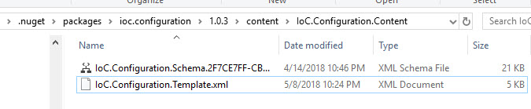

XML Configuration Template¶
Here is a template XML configuration file that can be used to get started. This file can be found also in folder IoC.Configuration.Content, under the folder, where Nuget package IoC.Configuration is downloaded (see the screenshot below). This file can also be downloaded from IoC.Configuration.Template.xml
Template file:
1<?xml version="1.0" encoding="utf-8"?>
2<!--
3Sample license text.
4-->
5
6<!--
7 This is a simple sample configuration file to use with IoC.Configuration library.
8 Some elements and attributes in this XML file should be modified per specific project.
9 For more complete example, look at files IoCConfiguration_Overview.xml and some ther configuration files in test project
10 IoC.Configuration.Tests at https://github.com/artakhak/IoC.Configuration/tree/master/IoC.Configuration.Tests.
11
12 The XML configuration file is validated against schema file IoC.Configuration.Schema.7579ADB2-0FBD-4210-A8CA-EE4B4646DB3F.xsd,
13 which can be found in folder IoC.Configuration.Content in output directory.
14 The schema file can also be downloaded from
15 http://oroptimizer.com/ioc.configuration/V2/IoC.Configuration.Schema.7579ADB2-0FBD-4210-A8CA-EE4B4646DB3F.xsd or in source code
16 project in Github.com.
17
18 To use Visual Studio code completion based on schema contents, right click Properties on this file in Visual Studio, and in Schemas
19 field pick the schema IoC.Configuration.Schema.7579ADB2-0FBD-4210-A8CA-EE4B4646DB3F.xsd.
20-->
21
22<iocConfiguration
23 xmlns:xsi='http://www.w3.org/2001/XMLSchema-instance'
24 xsi:noNamespaceSchemaLocation="http://oroptimizer.com/IoC.Configuration/V2/IoC.Configuration.Schema.7579ADB2-0FBD-4210-A8CA-EE4B4646DB3F.xsd">
25
26 <!--The application should have write permissions to path specified in appDataDir. This is where dynamically generated DLLs are saved.-->
27 <appDataDir path="C:\Users\user1\AppData\Local\MyApplication" />
28
29 <plugins pluginsDirPath="c:\Program Files\MyApplication\DLLs\PluginDlls">
30 <!--
31 Plugin assemblies will be in a folder with similar name under pluginsDirPath folder.
32 The plugin folders will be included in assembly resolution mechanism.
33 -->
34
35 <!--If Plugin1 is enabled, a folder c:\Program Files\MyApplication\DLLs\PluginDlls\Plugin1 should exist -->
36 <!--<plugin name="Plugin1" />-->
37 <!--<plugin name="Plugin2" enabled="false" />-->
38
39 </plugins>
40
41 <additionalAssemblyProbingPaths>
42 <probingPath path="c:\Program Files\MyApplication\DLLs\ThirdPartyLibs" />
43 </additionalAssemblyProbingPaths>
44
45 <assemblies>
46 <!--Assemblies should be in one of the following locations:
47 1) Executable's folder
48 2) In folder specified in additionalAssemblyProbingPaths element.
49 3) In one of the plugin folders specified in plugins element (only for assemblies with plugin attribute) -->
50 <assembly name="OROptimizer.Shared" alias="oroptimizer_shared" />
51 <assembly name="IoC.Configuration.Autofac" alias="autofac_ext" />
52 <assembly name="IoC.Configuration.Ninject" alias="ninject_ext" />
53 </assemblies>
54
55 <parameterSerializers serializerAggregatorType="OROptimizer.Serializer.TypeBasedSimpleSerializerAggregator">
56 <!--
57 Use parameters element to specify constructor parameters, if the type specified in 'serializerAggregatorType' attribute
58 has non-default constructor.
59 -->
60 <!--<parameters>
61 </parameters>-->
62 <serializers>
63 </serializers>
64 </parameterSerializers>
65
66 <!--The value of type attribute should be a type that implements IoC.Configuration.DiContainer.IDiManager-->
67 <diManagers activeDiManagerName="Autofac">
68 <diManager name="Ninject" type="IoC.Configuration.Ninject.NinjectDiManager">
69 <!--
70 Use parameters element to specify constructor parameters, if the type specified in 'type' attribute
71 has non-default constructor.
72 -->
73 <!--<parameters>
74 </parameters>-->
75 </diManager>
76 <diManager name="Autofac" type="IoC.Configuration.Autofac.AutofacDiManager">
77 </diManager>
78 </diManagers>
79
80 <!--
81 If settingsRequestor element is used, the type in type attribute should specify a type that implements
82 SharedServices.ISettingsRequestor. The implementation specifies a collection of required settings that should be present
83 in settings element.
84 Note, the type specified in type attribute is fully integrated into a dependency injection framework. In other words, constructor
85 parameters will be injected using bindings specified in dependencyInjection element.
86 -->
87 <!--<settingsRequestor type="MySettingsRequestor">
88 </settingsRequestor>-->
89
90 <settings>
91 <!--Example:
92 <int32 name="MySetting1" value="15"/>
93 -->
94 </settings>
95
96 <dependencyInjection>
97 <modules>
98 </modules>
99 <services>
100 </services>
101 <autoGeneratedServices>
102
103 </autoGeneratedServices>
104 </dependencyInjection>
105
106 <startupActions>
107 </startupActions>
108
109 <pluginsSetup>
110 </pluginsSetup>
111</iocConfiguration>